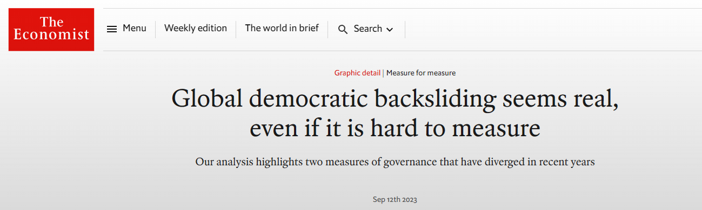

Is Democracy in Danger?
The Politics of Democratic Backsliding
Dr. Álvaro Canalejo-Molero
University of Lucerne
About me
Dr. Álvaro Canalejo-Molero
- Postdoctoral researcher at the SNF-funded project DIGIPOL and the Chair of Political Behaviour and Communication
- PhD in Political and Social Sciences from the EUI
- Interested in political behaviour, comparative politics, democratic attitudes and preferences, quantitative methods
- Originally from the city with the most UNESCO heritage sites in the world
- You can find more information about me in my personal website
What is the course about?

🧐
- What is democratic backsliding?
- How pervasive is it? Is it a global threat?
What explains democratic backsliding?
- What is the role of elites?
- And of voters?
- Can democratic backsliding reverse? And be fought back?
The Politics of Democratic Backsliding
- Block I. Democracy and Democratic Backsliding (27.02.2026 / 9:00–15:30) — INE 220
- Block II. The Supply-Side of Democratic Backsliding (13.03.2026 / 9:00–17:30) — INE 220
- Block III. The Demand-Side of Democratic Backsliding (17.04.2026 / 9:00–17:30) — INE 220
- Block IV. Trends and Debates on Democratic Backsliding (15.05.2026 / 15:45–17:30) — 4B02
Course requirements and evaluation
- Attend all the sessions
- Do the mandatory readings before each session
- Participate actively
- Write two response papers
- Present a case study of a country under democratic backsliding

Learning outcomes
By the end of this course, you will be able to…
- …understand key theories of democracy and democratic erosion, and assess major threats, trends, and forms of resilience.
- …critically evaluate quantitative research on democracy and political behavior, assessing theory and empirical strategy.
- …write critical response papers on scientific articles related to democracy and political behavior.
- …debate with colleagues and communicate complex concepts effectively to a broad audience.

First block this Friday !
- Within registration period
- The first session will cover the course content and organization in depth
- I hope to see many of you there! 👀

Thanks! 🙂

Hauptseminar - Spring Term 2026